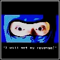

| site map | faq | help | forums | store |
|
description:
Chromehounds is a mech combat sim for the Xbox 360. Customize your mech - from the guns to the paint job - and take it online in a persistent world at war. There's also a single-player campaign to keep you busy while you're not online. intel: developer: from software publisher: sega release date: july 2006 genre: combat sim / mech players: 1 (local), 2-12 (online) esrb: teen |
|
|
// see you on the battlefield // / a review by ninja /  I have just come back from Neroimus War #12, a successful survivor of the Sal Kar Nation, winner of the 12th campaign. I'm here looking for more recruits, The Tarakians are retaliating, and have already taken our headquarters, here in War #13. We are currently accepting all applicants regardless of skill or prior Hound combat training, we'll teach you the basics, after that, there's little we can do for you. We are looking for pilots of all six Role Types, Soldiers, Scouts, Defenders, Snipers, Artillery Gunners, and if you're up for it, we might even recommend you for Commanding Officer. We'll give you enough cash to customize your own hound from hundreds of legs, cockpits, generators, light and heavy arms, even air lift rotors. Hell, we'll even give you your first Hound free. If that's not enough for you, we offer rewards for successful completion of each of 42 training missions, and a special bonus part for mastering each of them. Remember, Sal Kar is the richest of all the nations, and we know the value of cheap, lightweight equipment. Our hounds can run circles around the Tarakian and Morskoj hounds, and our scouts are the best known to man. Just be careful for their heavy armor, and keep firing, they won't go down in a few hits like some of our unfortunate soldiers are right now. Once you have your hound assembled, you need to join a squad before going to the campaign frontlines. Feel free to join the Maleus Malifica, my unit. Named after an infamous book of the crusades, designed to help you find and deal with heretics. Or if you desire, you can form your own squad. If you ever see me on the battlefield, you'll know it by the Hound I drive. It's been nicknamed the "Gouda Snake". Snake because its treads and vertically stacked design makes it look and act like a coiled viper ready to strike. Gouda? Let's just say, it's cheesy. Armed with a plethora of guided rockets, I don't plan to miss anytime soon, and being hammered by all those explosives really rocks the receiver so they can't shoot straight back... good thing, my cockpit is about the easiest thing to hit on my hound. Another of our favorite Hound Designs -- The Pile Driver. Remember I said we were the fastest Hounds out there? What better way to put speed to use than with Piles, huge thick spikes mounted on a battering ram arm that can rip though the toughest armor very quickly. If you've been disappointed by Mech 'games' before, have no fear, this one is very playable, offers you a great amount of customizability, and has the absolute best 'campaign' ever -- a real time war! A word of warning -- the Hound you use to crush the A.I. may do very poorly against human opponents. Good luck recruit! |